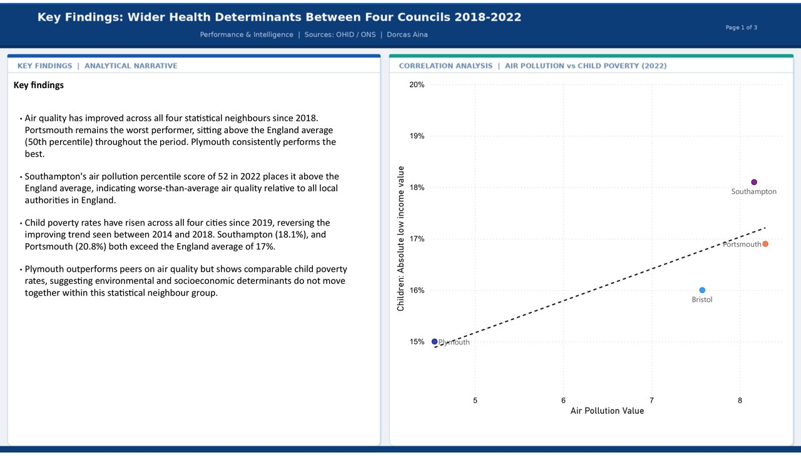
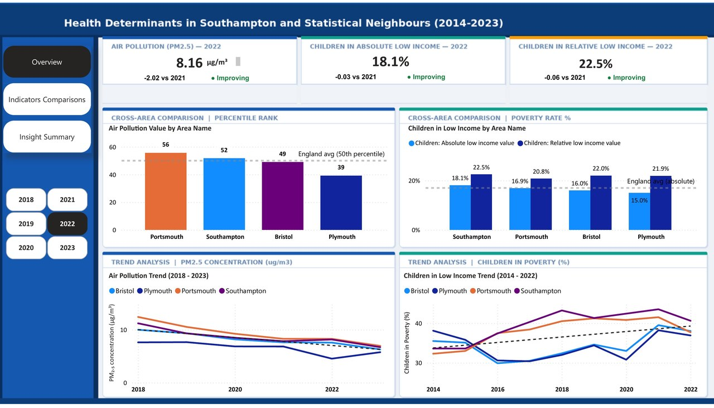
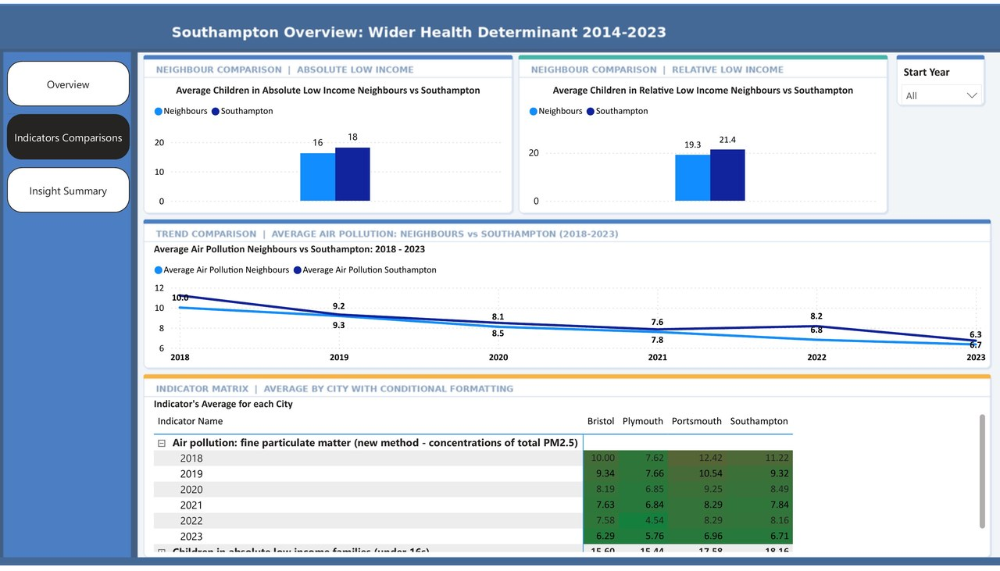

Multi-page Power BI dashboard analysing air pollution and child poverty across Southampton and three statistical neighbours (Portsmouth, Bristol, Plymouth) covering 2014–2023. Built on OHID public health data with custom DAX measures, England average benchmarks, RAG status indicators, and a bespoke background UI designed in Python.


